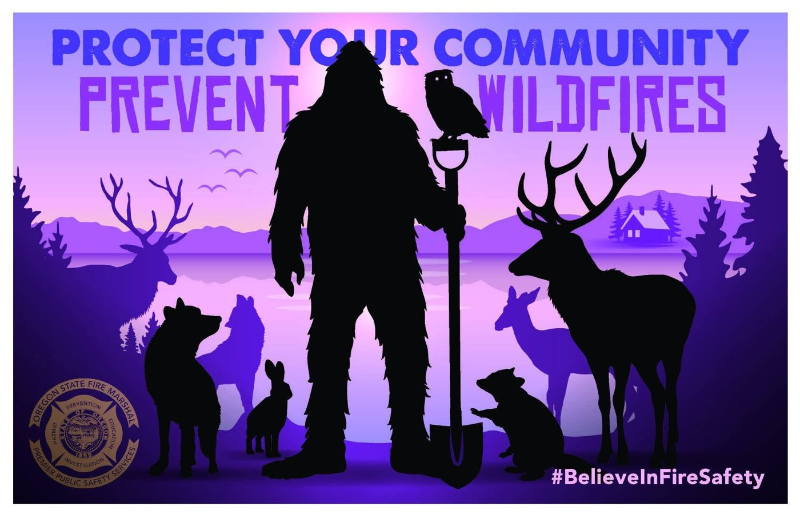

Be prepared
Resources
Fire information, live maps, and downloads. Updated September 2026.
Fire information and useful links
- Oregon Fire Restrictions Map Oregon Department of Forestry's live map of fire precaution levels and restrictions for every Oregon county.
- Northwest Coordination Center (NWCC) fire map Current large fires across Oregon and Washington.
- Oregon Department of Forestry daily fire statistics Fires reported on ODF-protected land, updated daily in season.
- InciWeb: Oregon incidents The federal Incident Information System. Official updates, maps, and closures for active fires.
- SWOFIRE Southwest Oregon fire information.
- Oregon DEQ Air Quality Index Current smoke and air quality readings across Oregon.
- Live weather radar (WunderMap) Interactive radar, wind, and storm tracking.
- LightningMaps.org Real-time lightning strikes as they happen.
- Animal Help Now Find emergency help for injured or distressed wildlife and animals anywhere in the U.S.
Preparedness resources
- Emergency Preparedness for Pets Ready.gov's checklist for keeping pets safe in a disaster.
- Wildfire is Coming. Are You Ready? CAL FIRE's Ready for Wildfire guide, including pre-evacuation steps.
- RedRover: Pet Disaster Preparedness Microchip, tag, buddy system, and a kit for each animal, with a printable checklist in English and Spanish.
- Family Communications Plan A fill-in form so everyone in your household knows who to call and where to meet.
- Emergency Preparedness Plan workbook A blank 20-page fill-in plan: food, water, communications, power, medical, shelter, transportation, and documents. Provided by Southern Oregon Survival in Grants Pass (PDF).
- Homework for Horse Owners Dr. Rebecca Husted of TLAER on the rescue gear worth owning, load-and-go readiness, barn fire prevention, and trailer upkeep (PDF).
- NFPA Horse Evacuation Checklist A printable five-page kit checklist for horse owners, from the National Fire Protection Association (PDF).
- Protect Your Critical Documents and Valuables FEMA's guide to safeguarding the papers you'll need after a disaster (PDF).
- Animal Evacuation Guide (Skagit County, WA) A county emergency management handout on evacuating pets and livestock (PDF).
- Disasters and Animals (Ventura County, CA) Animal Services' disaster page for a fire-prone county with a lot of horses.
- Bushfire Evacuation for Chickens How to get a backyard flock out fast, from NSW Hen Rescue in Australia.
Prevent wildfires

The Oregon State Fire Marshal's Believe in Fire Safety campaign covers the basics that stop fires before they start: no debris burning in fire season, no dragging chains, no parking on dry grass, and putting campfires dead out.